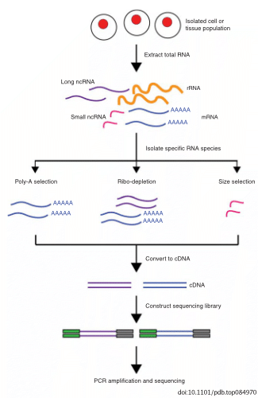
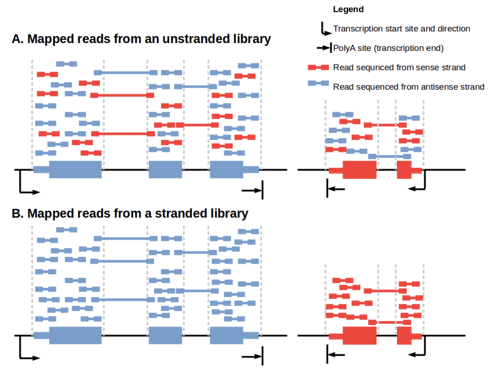
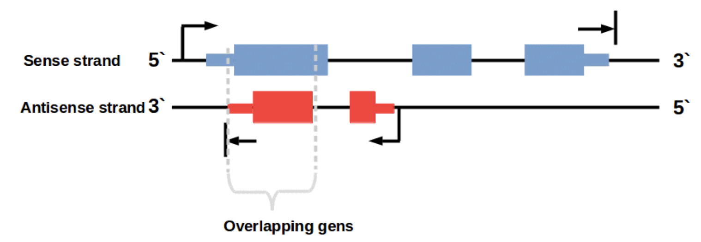
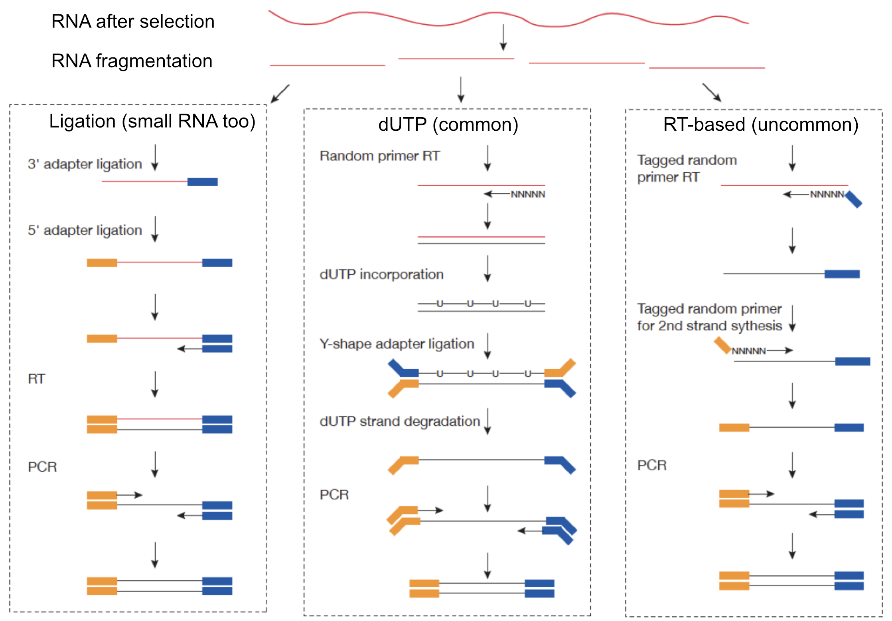
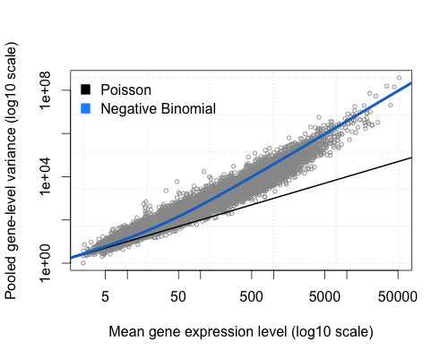

Messenger RNA (mRNA) carries genetic information encoded in DNA required for making proteins.
Steps of RNA regulation
Transcription: A pre-mRNA still containing intron sequences is transcribed from DNA.
Capping: A 7-methyl-guanosine “cap” is attached the 5’ end of the nascent RNA.
Splicing: The excision intronic sequences.
Cleavage: The nascent RNA is cleaved from DNA.
Polyadenylation: The addition of a polyA tail to the 3’ end of the now RNA.
Export: The mature mRNA is transported from the nucleus to the cytoplasm.
Localization: The mRNA is localized to specific sub-regions or organelles within the cell.
Translation: The production of specific protein based on the codons present within the mRNA.
Decay: The enzymatic degradation of mRNA molecules.
RNA-seq
Typically refers to “long” RNAs i.e. mRNA and long non-coding RNA (lncRNA). Specifically, we capture the steady-state pool of mature mRNA and to a lesser degree pre-mRNA. Thus, we can easily assess the abundance and isoforms expressed in the sample of interest. Of course, long read RNA sequencing (Nanopore, PacBio) enable better detection of continuity of exons and full-length isoforms.
Selecting RNA populations for sequencing
Need to determine which population of RNA you are interested in sequencing. The vast majority (~80%) of RNA in the cell is from ribosomal RNA. Smaller regulatory non-coding RNA are typically excluded due to size selection (snRNA, snoRNA, tRNA, miRNA).
polyA selection: uses oligo dT to hybridize to poly A tails of mRNA (and many long non-coding RNA)
depletion of rRNA: uses DNA oligos complementary to portions of rRNA to either remove (purification) or degrade (RNaseH) to avoid rRNA getting into the library.
size selection: sequence a population of RNAs that have a specific length such as microRNAs, which are ~21 nt regulatory non-coding RNAs.

Importance of stand-specificity

…and the genome has complex organization.
strand-specificity is crucial

Achieving strand-specificity

RNA-seq read alignment
You get your data back and align the reads to the genome, right? Nope, we need to deal with reads that will need to be “split” - spliced exons - to properly align. There are two strategies to deal with this: 1) Spliced alignments and 2) Pseudoalignment (transcripts).
Create an index to evaluate the sequences for all possible unique sequences of length k (k-mer) in the transcriptome from known transcripts (splice isoforms for all genes).
The Salmon index has two components:
a suffix array (SA) of the reference transcriptome
a hash table to map each transcript in the reference transcriptome to it’s location in the SA
The quasi-mapping approach estimates where the reads best map to on the transcriptome through identifying where informative sequences within the read map to instead of performing base-by-base alignment.
How does Salmon work? (cont.)
The read is scanned from left to right until a k-mer that appears in the hash table is discovered.
The k-mer is looked up in the hash table and the SA intervals are retrieved, giving all suffixes containing that k-mer
Similar to STAR, the maximal matching prefix (MMP) is identified by finding the longest read sequence that exactly matches the reference suffixes.
How does Salmon work? (cont.)
We could search for the next MMP at the position following the MMP, but often natural variation or a sequencing error in the read is the cause of the mismatch from the reference, so the beginning the search at this position would likely return the same set of transcripts. Therefore, Salmon identifies the next informative position (NIP), by skipping ahead 1 k-mer.
This process is repeated until the end of the read.
The final mappings are generated by determining the set of transcripts appearing in all MMPs for the read. The transcripts, orientation and transcript location are output for each read.
After determining the best mapping for each read/fragment, salmon will generate the final transcript abundance estimates after modeling sample-specific parameters and biases. Note that reads/fragments that map equally well to more than one transcript will have the count divided between all of the mappings; thereby not losing information for the various gene isoforms.
Accounting for biases
Salmon and Kallisto account for:
GC bias
positional coverage biases
sequence biases at 5’ and 3’ ends of the fragments
fragment length distribution
strand-specificity
Transcript quantification metrics
Need to deal with systematic differences within/between samples such as:
RPKM and FPKM are pretty much the same thing. FPKM is for fragments (paired-ends), not reads (single-end).
TPM and [F|R]PKM account for length differences between transcripts.
The sum of all [F|R]PKMs may not be the same across samples.
TPM normalizes to gene length first and then normalize for sequencing depth. Thus the sum of all TPMs is the same across samples. A better measure of relative transcript “concentration” in your sample than [F|R]PKM.
Appropriate use and caveats
Can I compare TPM / *PKM / CPM across samples?
It depends what you mean by “compare”. Because these measures are purely relative, you cannot reliably use a metric like TPM to directly assess differences in transcript abundance across samples. Specifically, changes in the composition (e.g. polyA vs rRNA-depleted) of a sample can lead to changes in TPM, even if transcripts are, in reality, expressed at the same true level across samples. Metrics like this can be useful for “high-level” comparisons (e.g. visualizing samples etc.). However, whenever using a relative metric like this, one should be aware of its relative nature and the potential caveats that go along with interpreting them between samples.
We do NOT use TPM differences for differential expression.
DO NOT USE TPM (or anything we just talked about) to perform differential expression analysis.
RNA-seq data are discrete non-negative integers (counts per transcripts).
Remember the reads are (pseudo-)aligned and we COUNT how many are assigned to a specific transcript in a given sample.
Distributions for count data
Reads are count based and not normally distributed. Two distributions for count based data are poisson (which presumes the variance and mean are equal) or negative binomial (which does not). This is especially a problem when the number of biological replicates are low because it is hard to accurately model variance of count based data if you are looking at only that gene and making the assumptions of normally distributed continuous data (ie a t-test).
Overdispersion
Overdispersion the variance of counts is generally greater than their mean, especially for genes expressed at a higher level.

The total number of reads for each sample tends to be in the millions, while the counts per gene are much lower (many zeros, tens/hundreds) and vary considerably. While the Poisson distribution seems appropriate for sampling out of a large pool with low probability. Poisson does not handle overdispersion, enter the Negative Binomial distribution.
Examine count data
d <-read_csv(here("data", "unfilt_counts.csv.gz")) |>as.matrix()
Rows: 57808 Columns: 6
── Column specification ────────────────────────────────────
Delimiter: ","
dbl (6): mock_rna_A, mock_rna_B, mock_rna_C, 8430_rna_A,...
ℹ Use `spec()` to retrieve the full column specification for this data.
ℹ Specify the column types or set `show_col_types = FALSE` to quiet this message.
where counts \(K_{ij}\) for gene i, sample j are modeled using a negative binomial distribution with fitted mean \(\mu_{ij}\) and a gene-specific dispersion parameter \(\alpha_i\). The fitted mean is composed of a sample-specific size factor \(s_{j}\) and a parameter \(q_{ij}\) proportional to the expected true concentration of fragments for sample j.
DESeq2
\[\log_2(q_{ij}) = x_{j.} \beta_i\] The coefficients \(\beta_{i}\) give log2 fold changes for gene i `for each column of the model matrix X. Note that the model can be generalized to use sample- and gene-dependent normalization factors \(s_{ij}\).
Scaling between samples
The counts divided by sample-specific size factors determined by median ratio of gene counts relative to geometric mean per gene.
Step 1: creates a pseudo-reference sample (row-wise geometric mean)
Step 2: calculates ratio of each sample to the reference
Step 3: calculate the normalization factor for each sample (size factor)
estimateSizeFactors
d <-read_csv(here("data", "unfilt_counts.csv.gz")) |>as.matrix()
Rows: 57808 Columns: 6
── Column specification ────────────────────────────────────
Delimiter: ","
dbl (6): mock_rna_A, mock_rna_B, mock_rna_C, 8430_rna_A,...
ℹ Use `spec()` to retrieve the full column specification for this data.
ℹ Specify the column types or set `show_col_types = FALSE` to quiet this message.
# estimateSizeFactorsForMatrix(counts = d)
Gene-wise dispersion
We need to generate accurate estimates of within-group variation for each gene…but usually have only 3 replicates making it hard to estimate reliably.
DESeq2 shares information across genes to generate more accurate estimates of variation based on the mean expression level of the gene using a method called ‘shrinkage’. DESeq2 assumes that genes with similar expression levels have similar dispersion.
Estimating the dispersion for each gene separately:
To model the dispersion based on expression level (mean counts of replicates), the dispersion for each gene is estimated using maximum likelihood estimation. In other words, given the count values of the replicates, the most likely estimate of dispersion is calculated.